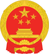

Special administrative regions of China
Special administrative regions of the People's Republic of China | |
|---|---|
 | |
| Regional flags of Hong Kong and Macau | |
| Official languages |
|
| Official script | |
| Demonym(s) |
|
| Special Administrative Regions | |
| Government | One country, two systems |
| Xi Jinping | |
| Li Qiang | |
| Zhao Leji | |
| Ding Xuexiang | |
| Xia Baolong | |
| John Lee Ka-chiu | |
| Ho Iat Seng | |
| Area | |
• Total | 2,870.27 km2 (1,108.22 sq mi) |
| Population | |
• 2014[a] estimate | 7,858,800[1][2] |
• Density | 6,920/km2 (17,922.7/sq mi) |
| Currency | Hong Kong dollar (Hong Kong, Macau) Macanese pataca (Macau) |
| Date format | |
| |
{kind=link}
{kind=link}
{kind=link}
| Special Administrative Region(s) of the People's Republic of China | |||||||||||||||||||||
|---|---|---|---|---|---|---|---|---|---|---|---|---|---|---|---|---|---|---|---|---|---|
| Chinese name | |||||||||||||||||||||
| Traditional Chinese | 中華人民共和國特別行政區 | ||||||||||||||||||||
| Simplified Chinese | 中华人民共和国特别行政区 | ||||||||||||||||||||
| Cantonese Yale | Jūng'wàh Yàhnmàhn Guhng'wòhgwok Dahkbiht Hàngjingkēui | ||||||||||||||||||||
| Postal | Chunghwa Jenmin Kunghokuo Tepieh Hsingchengchu | ||||||||||||||||||||
| |||||||||||||||||||||
| Portuguese name | |||||||||||||||||||||
| Portuguese | Regiões Administrativas Especiais da República Popular da China[a] | ||||||||||||||||||||
| Administrative divisions of China |
|---|
|
History: before 1912, 1912–49, 1949–present Administrative division codes |
|  |
|---|
|
|
.svg){kind=link}
{kind=link}
_cap_insignia.svg){kind=link}
.png){kind=link}
The special administrative regions (SAR) of the People's Republic of China are one of four types of province-level divisions of the People's Republic of China directly under the control of its Central People's Government (State Council), being integral areas of the country. As a region, they possess the highest degree of autonomy from China's central government. However, despite the relative autonomy that the Central People's Government offers the special administrative regions, the National People's Congress and its Standing Committee remains capable of enforcing laws for the special administrative regions.[3]
The legal basis for the establishment of SARs, unlike the other administrative divisions of China, is provided for by Article 31, rather than Article 30, of the Constitution of the People's Republic of China of 1982. Article 31 reads: "The state may establish special administrative regions when necessary. The systems to be instituted in special administrative regions shall be prescribed by law enacted by the National People's Congress in the light of the specific conditions".[4][5][6][7]
At present, there are two SARs established by the Constitution: Hong Kong and Macau. These former British and Portuguese territories were transferred to China in 1997 and 1999, following the Sino-British and Sino-Portuguese Joint Declarations signed in 1984 and 1987, respectively.[8] Pursuant to their Joint Declarations, which are binding inter-state treaties registered with the United Nations, and their Basic laws, the Chinese SARs "shall enjoy a high degree of autonomy".[9] Generally, the two SARs are not considered to constitute a part of mainland China, by both SAR and mainland Chinese authorities.
The provision to establish special administrative regions appeared in the constitution in 1982, in anticipation of the talks with the United Kingdom over the question of the sovereignty over Hong Kong. It was envisioned as the model for the eventual unification with Taiwan and other islands, where the Republic of China has resided since 1949.
Under the one country, two systems principle, the Chinese Central Government is responsible for the diplomatic, military and other state-level affairs of the two SARs. But two SARs continue to possess their own multi-party legislatures, legal systems, police forces, separate customs territory, immigration policies, left-hand traffic,[10] official languages, academic and educational systems, representation on certain international bodies and representation in international competitions, and other aspects that fall within the autonomous level.
Special administrative regions should not be confused with special economic zones, which are areas in which special economic laws apply to promote trade and investments. The Wolong Special Administrative Region in Sichuan province is a nature reserve and not a political division.
List of special administrative regions of China
[edit]There are currently two special administrative regions established according to Article 31 of the Chinese Constitution. For the Wolong Special Administrative Region in Sichuan Province, please see the section Wolong below.
| Name | Chinese (T) / (S) | Yale | Pinyin | Postal map | Abbreviation and GB | Population | Area km2 | ISO | ISO:CN | Admin. Division |
|---|---|---|---|---|---|---|---|---|---|---|
| 香港 | Hēunggóng | Xiānggǎng | Hongkong | 港 (Gǎng), HK, HKSAR | 7,184,000 | 1,104.4 | HK
|
CN-HK
|
List (18 districts) | |
| 澳門 / 澳门 | Oumùhn | Àomén | Macao | 澳 (Ào), MO, MC, MSAR, RAEM | 614,500 | 31.3 | MO
|
CN-MO
|
List (8 freguesias) |
Characteristics
[edit]The two special administrative regions of Hong Kong and Macau (created in 1997 and 1999 respectively) each have a codified constitution called Basic Law.[8] The law provides the regions with a high degree of autonomy, a separate political system, and a capitalist economy under the principle of "one country, two systems" proposed by Deng Xiaoping.[8]
High degree of autonomy
[edit]Currently, the two SARs of Hong Kong and Macau are responsible for all affairs except those regarding diplomatic relations and national defence.[11] Consequently, the National People's Congress authorises the SAR to exercise a high degree of autonomy and enjoy executive, legislative and independent judicial powers,[12] and each with their own Courts of Final Appeal.[13]
Currency
[edit]- Renminbi: The currency is commonly abbreviated as CNY¥. Adopt a stable exchange rate.
- Hong Kong dollar: The currency is commonly abbreviated as HK$. The exchange rate is pegged to the US dollar.
- Macanese pataca: The currency is commonly abbreviated as MOP$. The exchange rate is pegged to the Hong Kong dollar.
External affairs
[edit]Special administrative regions are empowered to contract a wide range of agreements with other countries and territories such as mutual abolition of visa requirement, mutual legal aid, air services, extradition, handling of double taxation and others, with no Chinese government involvement. However, in some diplomatic talks involving a SAR, the SAR concerned may choose to send officials to be part of the Chinese delegation. For example, when former Director of Health of Hong Kong Margaret Chan became the World Health Organization (WHO) Director-General, she served as a delegate from the People's Republic of China to the WHO.
At the same time they are members of various international organizations such as WTO, APEC, etc.
- Hong Kong participates in 41 intergovernmental international organizations with countries as participating units.
- Hong Kong participates in 54 intergovernmental international organizations that do not use countries as their participating units.[14]
- Macau participates in 19 intergovernmental international organizations with countries as participating units.
- Macau participates in 30 intergovernmental international organizations that do not use countries as their participating units.[15]
The Government of Hong Kong and Government of Macao have established Hong Kong Economic and Trade Offices (HKETOs) and Delegação Económica e Comercial de Macaus (DECMs) respectively in some countries, as well as in the Greater China Region. HKETOs serve as a quasi-interests section in favour of Hong Kong. DECMs serve as a quasi-interests section in favour of Macao. For regions with no HKETOs and DECMs, Chinese diplomatic missions take charge of protecting Hong Kong-related and Macau-related interests.
Some countries which have a diplomatic relationship with the central Chinese government maintain Consulate-General offices in Hong Kong and Macau.
{kind=link}
{kind=link}
Olympic Games
[edit]In sporting events such as the Olympic Games or Asian Games, the SARs may have their own independent teams. They participate under the respective names of "Hong Kong, China" and "Macau, China", and compete as different entities[16] as they had done since they were under foreign rules, but both SARs are usually allowed to omit the term ", China" for informal use.[citation needed]
Defence and military
[edit]The People's Liberation Army is garrisoned in both SARs. PRC authorities have said the PLA will not be allowed to interfere with the local affairs of Hong Kong and Macau, and must abide by its laws.[17] In 1988, scholar Chen Fang of the Academy of Military Science even tried to propose the "One military, two systems" concept to separate the defence function and public functions in the army.[17] The PLA does not participate in the governance of the SAR but the SAR may request them for civil-military participation, in times of emergency such as natural disasters. Defence is the responsibility of the PRC government.[11]
A 1996 draft PRC law banned People's Liberation Army–run businesses[broken anchor] in Hong Kong, but loopholes allow them to operate while the profits are ploughed back into the military.[17] There are many PLA-run corporations in Hong Kong. The PLA also have sizeable land holdings in Hong Kong worth billions of dollars.[17]
Immigration and nationality
[edit]Each of the SARs issues passports on its own to its permanent residents who are concurrently Chinese (PRC) citizens. PRC citizens must also satisfy one of the following conditions:
- born in the SAR;
- born anywhere while either parent was a permanent resident of the SAR;
- resided continuously and legally for seven or more years in the SAR and therefore gained a right of abode in the SAR.
Apart from affording the holder consular protection by the Ministry of Foreign Affairs of the People's Republic of China, these passports also specify that the holder has right of abode in the issuing SAR.
The National People's Congress has also put each SAR in charge of administering the PRC's Nationality Law in its respective realms, namely naturalisation, renunciation and restoration of PRC nationality and issuance of proof of nationality.
Due to their colonial past, many inhabitants of the SARs hold some form of non-Chinese nationality (e.g. British National (Overseas) status, British citizenship, British Overseas citizenship or Portuguese citizenship). However, SAR residents who are Chinese descent have always been considered as Chinese citizens by the PRC authorities, an exception to this case is Macau, wherein residents of Chinese descent may choose Chinese or Portuguese nationality. Special interpretation of the Nationality Law, while not recognising dual nationality, has allowed Chinese citizens to keep their foreign "right of abode" and use travel documents issued by the foreign country. However, such travel documents cannot be used to travel to mainland China and persons concerned must use Home Return Permit. Therefore, master nationality rule applies so the holder may not enjoy consular protection while in mainland China. Chinese citizens who also have foreign citizenship may declare a change of nationality at the Immigration Department of the respective SARs, and upon approval, would no longer be considered Chinese citizens.
SAR permanent residents who are not Chinese citizens (including stateless persons) are not eligible for SAR passports. Persons who hold a non-Chinese citizenship must obtain passports from foreign diplomatic missions which represents their countries of citizenship. For those who are stateless, each SAR may issue its own form of certificates of identity, e.g. Document of Identity, in lieu of national passports to the persons concerned. Chinese citizens who are non-permanent residents of two SARs are also ineligible for SAR passports but may obtain CIs just like stateless persons.
Passport
[edit]- Chinese passport (for the mainland residents with Hukou only)
- Hong Kong SAR passport (for Hong Kong permanent residents with Chinese citizenship only)
- Macao SAR passport (for Macau permanent residents with Chinese citizenship only)
Comparisons
[edit]Offer to Taiwan and other ROC-controlled areas
[edit]The status of a special administrative region for Taiwan and other areas controlled by the Republic of China (ROC) was first proposed in 1981.[8] The 1981 proposal was put forth by NPC chairman Ye Jianying called "Ye's nine points" (葉九條).[18] A series of different offers have since appeared. On 25 June 1983 Deng Xiaoping appeared at Seton Hall University in the US to propose "Deng's six points" (鄧六條), which called for a "Taiwan Special Administrative Region" (台湾特別行政区).[18] It was envisioned that after Taiwan's unification with the PRC as an SAR, the PRC would become the sole representative of China.[18] Under this proposal, Taiwan would be guaranteed its own military,[18] its own administrative and legislative powers, an independent judiciary and the right of adjudication, although it would not be considered a separate government of China.[18]
In 2005 the Anti-Secession Law of the PRC was enacted. It promises the lands currently ruled by the authorities of Taiwan a high degree of autonomy, among other things.[19] The PRC can also employ non-peaceful means and other necessary measures to defend its claims to sovereignty over the ROC's territories in the event of an outright declaration of independence by Taiwan (ROC).[19]
In January 2019, the 40-year anniversary of a statement made by the PRC to Taiwan in 1979, Chinese Communist Party general secretary Xi Jinping outlined in a speech how the "one country, two systems" principle would be applied to Taiwan.[20] Several major points from the speech include:[20]
- Taiwan would be a special administrative region of China, and part of the PRC. The ROC would no longer exist.[20]
- Taiwan's institutions would metamorphose into sub-national bodies.[20]
- Taiwan's social system and economic lifestyle would be respected.[20]
- Taiwan's private property rights, belief systems, and "legitimate rights and interests" would be safeguarded.[20]
- The "Taiwan issue" should not be passed down from generation to generation (i.e. reunification should be done promptly).[20]
- The reunification of Taiwan would lead to the "great rejuvenation of the Chinese nation".[20]
Wolong
[edit]The Wolong Special Administrative Region[21] (Chinese: 卧龙特别行政区; pinyin: Wòlóng Tèbié Xíngzhèngqū) is located in the southwest of Wenchuan County, Ngawa Tibetan and Qiang Autonomous Prefecture of Sichuan. It was formerly known as Wolong Special Administrative Region of Wenchuan County, Sichuan Province and was founded in March 1983 with approval of the State Council. It was given its current name and placed under Sichuan provincial government with administrative supervision by the provincial department of forestry. Its area supersedes Sichuan Wolong National Nature Reserve and its administrative office is the same as the Administrative Bureau of the State Forestry Administration for the reserve. It currently has a population of 5,343.[21]
Despite its name, the Wolong Special Administrative Region is not an SAR as defined by Article 31 of the Constitution of the People's Republic of China.[citation needed] This is primarily because the Wolong Special Administrative Region was established with the approval of the State Council, rather than "by law enacted by the National People's Congress" as stipulated in Article 31 of the Constitution.[22]
Defunct SARs
[edit]In the Republic of China (ROC) era between 1912 and 1949, the "special administrative regions" (Chinese: 特別行政區; pinyin: tèbié xíngzhèngqū) were historically used to designate special areas by the Beiyang government, most of which were eventually converted into provinces by the Nationalist government in 1928. All were suspended or abolished after the end of the Chinese Civil War, with the establishment of the People's Republic of China (PRC) and the ROC government's retreat to Taiwan, but they continued to exist as provinces under ROC law. The regions were:
| Name | Chinese | Pinyin | Created | Became province |
Current status |
|---|---|---|---|---|---|
| Suiyuan | 綏遠 | Suíyuǎn | 1914 | 1928 | Part of Inner Mongolia |
| Chahar | 察哈尔 | Cháhā'ěr | 1914 | 1928 | Distributed into Inner Mongolia, Beijing and Hebei[when?] |
| Jehol | 熱河 | Rèhé | 1914 | 1928 | Distributed into Hebei, Liaoning and Inner Mongolia[when?] |
| Chwanpien | 川边 | Chuānbiān | 1914 | 1935 (as Xikang Province) | Western Sichuan and eastern Tibet Autonomous Region |
| Tungsheng | 東省 | Dōngshěng | 1924 | Land along the Chinese Eastern Railway, now part of Heilongjiang | |
| Weihai | 威海 | Wēihǎi | 1930 | Part of Shandong | |
| Hainan | 海南 | Hǎinán | 1944 | In preparation in 1949 | Hainan Province since 1988 |
See also
[edit]- Autonomous regions of China
- Constitution of the People's Republic of China
- Federacy
- History of Hong Kong
- History of Macau
Notes
[edit]- ^ Portuguese pronunciation: [ʁɨʒiˈõɨz ɐðminiʃtɾɐˈtivɐz ɨʃpɨsiˈajʒ ðɐ ʁɛˈpuβlikɐ pupuˈlaɾ ðɐ ˈʃinɐ]
- ^ References and details on data provided in the table can be found within the individual provincial articles.
References
[edit]- ^ "Mid-year Population for 2014". Census and Statistics Department (Hong Kong). 12 August 2014. Archived from the original on 6 October 2014. Retrieved 5 October 2014.
- ^ "Demographic Statistics for the 2nd Quarter 2014". Statistics and Census Service of the Government of Macau SAR. 11 August 2014. Archived from the original on 14 November 2014. Retrieved 5 October 2014.
- ^ Regan, Helen (29 June 2020). "China passes sweeping Hong Kong national security law". CNN. Retrieved 29 July 2020.
- ^ Administrative divisions of the People's Republic of China (中华人民共和国行政区划; Zhōnghuá Rénmín Gònghéguó Xíngzhèng Qūhuà), 15 June 2005, archived from the original on 23 July 2010, retrieved 5 June 2010
- ^ Chapter II: Relationship between the Central Authorities and the Hong Kong Special Administrative Region, Article 12, archived from the original on 29 July 2010, retrieved 5 June 2010
- ^ Chapter II Relationship between the Central Authorities and the Macau Special Administrative Region, Article 12, archived from the original on 5 February 2012, retrieved 5 June 2010
- ^ Lauterpacht, Elihu. Greenwood, C. J. [1999] (1999). International Law Reports Volume 114 of International Law Reports Set Complete set. Cambridge University Press, 1999. ISBN 0521642442, 9780521642446. p 394.
- ^ a b c d Ghai, Yash P. (2000). Autonomy and Ethnicity: Negotiating Competing Claims in Multi-Ethnic States. Cambridge University Press. ISBN 0521786428, 9780521786423. p 92.
- ^ Article 12, Basic Law of Hong Kong and Article 12, Basic Law of Macau
- ^ "Right side of road the only way to travel on Hong Kong-Zhuhai-Macau bridge". South China Morning Post. 13 February 2018.
- ^ a b Zhang Wei-Bei. [2006] (2006). Hong Kong: the pearl made of British mastery and Chinese docile-diligence. Nova Publishers. ISBN 1594546002, 9781594546006.
- ^ Chan, Ming K. Clark, David J. [1991] (1991). The Hong Kong Basic Law: Blueprint for Stabiliree Legal Orders – Perspectives of Evolution: Essays on Macau's Autonomy After the Resumption of Sovereignty by China. ISBN 3540685715, 9783540685715. p 212.
- ^ Oliveira, Jorge. Cardinal, Paulo. [2009] (2009). One Country, Two Systems, Three Legal Orders – Perspectives of Evolution: Essays on Macau's Autonomy After the Resumption of Sovereignty by China. ISBN 3540685715, 9783540685715. p 212.
- ^ http://www.fmcoprc.gov.hk/chn/syzx/gjzzygjhy/P020120709681086353002.pdf [bare URL PDF]
- ^ http://www.fmcoprc.gov.mo/chn/satfygjzz/gjzzygjhy/P020191211370314097817.pdf [bare URL PDF]
- ^ English.eastday.com. English.eastday.com Archived 21 January 2012 at the Wayback Machine. "China keeps low key at East Asian Games." Retrieved on 13 December 2009.
- ^ a b c d Gurtov, Melvin. Hwang, Byong-Moo Hwang (1998). China's Security: The New Roles of the Military. Lynne Rienner Publishing. ISBN 1555874347, 9781555874346. pp. 203–204.
- ^ a b c d e "鄧六條"（1983年6月25日）. big5.china.com.cn. 20 December 2004. Archived from the original on 27 September 2011. Retrieved 14 December 2009.
- ^ a b United Nations refugee agency. "UNHCR Archived 18 October 2012 at the Wayback Machine." Anti-Secession Law (No. 34). Retrieved on 14 December 2009.
- ^ a b c d e f g h Bush, Richard C. (7 January 2019). "8 key things to notice from Xi Jinping's New Year speech on Taiwan". Brookings. Retrieved 9 January 2019.
- ^ a b Wolong Introduction Archived 11 July 2015 at the Wayback Machine
- ^ "A Brief Review of the Special Administrative Regions and the Special Administrative Region System" (PDF). Archived (PDF) from the original on 11 July 2015. Retrieved 10 July 2015.
{kind=link}